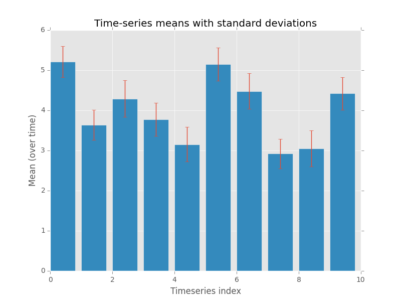

Welcome!
This tutorial contains the following pages:
Introduction
These notes are intended as a light introduction and guide to learning how to program in Python.
As big a part of this workshop as any of the formal aims listed below, is that you should enjoy yourself. Python is a fun language because it is relatively easy to read and tells you all about what you did wrong (or what module was broken) if an error occurs.
With that in mind, have fun, and happy learning!
Structure of this course
The main components of this workshop are these notes and accompanying exercises.
In addition you will receive a brief introductory talk, and we will work through the first exercise together to make sure that you are able to write and run a basic Python script.
From there, you’ll be left to work through the material at your own pace with invaluable guidance and advice available from the workshop demonstrators.
Where appropriate, key points will be emphasized via short interjections during the workshop.
What is Python?
Python is the name of a programming language (created by Dutch programmer Guido Van Rossum as a hobby programming project!), as well as the program, known as an interpreter, that executes scripts (text files) written in that language.
Van Rossum named his new programming language after Monty Python’s Flying Circus (he was reading the published scripts from “Monty Python’s Flying Circus” at the time of developing Python!).
It is common to use Monty Python references in example code. For example, the dummy (aka metasyntactic) variables often used in Python literature are spam and eggs, instead of the traditional foo and bar. As well as this, the official Python documentation often contains various obscure Monty Python references.
Jargon
The program is known as an interpreter because it interprets human readable code into computer readable code and executes it. This is in contrast to compiled programming languages like C, C++, and Java which split this process up into a compile step (conversion of human-readable code into computer code) and a separate execution step, which is what happens when you press on a typical program executable, or run a Java class file using the Java Virtual Machine.
Because of it’s focus on code readability and highly expressive syntax (meaning that programmers can write less code than would be required with languages like C or Java), Python has grown hugely in popularity and is now one of the most popular programming languages in use.
Why Python? : Motivation
Now that we know roughly what Python is, why is Python of interest to us as researchers?
For users of specialist packages like Matlab, Stata, R, the answer might be because Python offers in most cases a similar performance and range of functions, while providing a much wider range of additional functionality. Plus compared with Matlab or Stata, Python is open-source and free.
If you come from a low(or lower)-level computing background like C++, Java, Fortran, then Python is great at accelerating development and prototyping time, and the ability to “glue” together routines written in Fortan or C++ offer the best of both worlds.
Lastly, if you’re not from either of these backgrounds, then let’s provide a sample of what you can do with Python for a typical research project:
- A huge number of libraries means that data readers and writers have been written for a wide range of data formats.
- Once data is loaded, numerical analysis libraries allow statistical analysis and modelling to be performed
- The resulting analyses can be turned into plots using Matplotlib or one of a growing number of alternative plotting libraries. These plots can generally be saved as images (PNG, JPG) or PDFs.
- The above process is trivial to perform in batch over whole directory trees
- User interface and web application libraries mean that instead of running command line scripts, you can develop rich graphical interfaces for your collaborators, including web-pages.
Example: with just 13 lines of Python (plus comments), we are able to write a realistic script to loop over all CSV files in a folder (and subfolders), and generate a statistical plot for each one, including titles etc!

(“Time-series” generated using numpys random number generator).
In addition, this was using general numerical libraries; with a specialist library like Pandas this could probably have been reduced further.
While these modules won’t be covered until the advanced sessions, these introductory sessions lay the groundwork for being able to use these modules.
Aims
This course aims to teach you how to use basic Python including
- Writing scripts
- Python variable types
- Control flow (
if,for,while) - Reading and writing files
- Functions (using and writing!)
- Commenting and documenting code
- Working with modules
We will not be delivering hours of lectures on programming constructs and theory, or detailing how every function of every module works.
Printing the notes
For both environmental reasons and to ensure that you have the most up-to-date version, we recommend that you work from the online version of these notes.
However, if you wish to have a hard copy, you may download a pdf version of the notes from here : [python_2016__introduction_to_python.pdf](/python_2016__introduction_to_python.pdf) and print them.
Errata
Please email any typos, mistakes, broken links or other suggestions to j.metz@exeter.ac.uk.
Installing on your own machine
If you want to use Python on your own computer I would recommend using one of the following “distributions” of Python, rather than just the basic Python interpreter.
Amongst other things, these distributions take the pain out of getting started because they include all modules you’re likely to need to get started as well as links to pre-configured consoles that make running Python a breeze.
- Anaconda (Win, MacOS, Linux) : Commercially backed free distribution
- WinPython (Windows Only) : Open-source free distribution
- Linux : Python 2 is pre-installed on most linux distributions; to install Python 3, simply use your favourite package manager. E.g. on Debian based systems (Debian, Ubuntu, Mint), running
sudo apt-get install python3from a terminal will install Python 3. Alternatively use Anaconda.
Note : Be sure to download the Python 3, not 2, and get the correct architecture for your machine (i.e. 32 or 64 bit).